CryptoNote2.0.md
CryptoNote v2.0 白皮书
英语原文在此
1 介绍
”比特币“已经是一个点到点电子现金概念的成功实现。专业人士和公众都已经意识到，将公共交易和工作量证明的便捷结合作为一种信任模型。如今，电子现金的用户群稳步增长；顾客被电子现金的低费率和匿名性吸引，而商家则受益于它的可预测性和去中心化发行带来的好处。比特币有效地证明了电子现金可以像纸币一样简单，也可以像信用卡一样便捷。
不幸的是，比特币还有很多缺点。比如，系统的分布式能力缺乏弹性，在几乎所有的网络用户更新客户端之前，禁止实时新功能。一些无法迅速修复的严重缺陷阻止了比特币的广泛传播。在这种缺乏弹性的模型中，推出新项目比永久修复原来的项目更有效。
在这篇论文中，研究并提出针对比特币主要缺陷的解决方案。我们相信我们提出的解决方案的系统将引领不同电子现金系统之间的健康竞争。同时我们也提出了自己的电子现金”CryptoNote“,该名称意味着电子现金的下一个突破。
2 比特币的缺陷和一些可能的解决方案
2.1 交易的可追溯性
隐私和匿名性是电子现金很重要的方面，从第三方的角度来看，P2P支付似乎被隐藏起来，与传统银行相比有明显的不同。特别是T. Okamoto和K. Ohta描述了理想的电子现金的六个标准，其中包括“隐私：用户与其购买的商品之间的关系必须是任何人都无法追踪的”。从他们的描述中，我们得出了完全匿名的电子现金模型必须满足的两个属性，才能符合Okamoto和Ohta概述的要求：
- 不可追溯性： 对于每笔收入的交易，所有可能的发送者都是等价的。
- 无关联性： 对于任何两个外发交易，无法证明它们已发送给同一个人。
不幸的是，比特币不满足不可追溯性的要求，因为网络参与者之间发生的所有交易都是公开的，而且任何交易都可以明确地追溯到唯一的起源和最终的接收者。即使两个参与者以间接方式交换资金，一种经过适当设计的寻径方法也会揭示出来源和最终接收者。
而且同样怀疑的是比特币也不满足第二个特性。一些研究人员指出，仔细的区块链分析可能会揭示出比特币网络的用户与其交易之间的联系。尽管有许多方法存在争议，但怀疑可以从公共数据库中提取很多隐藏的个人信息。
比特币未能满足以上概述的两个属性，让我们得出结论，它不是匿名的而是伪匿名的电子现金系统。人们迅速开发解决方案来克服这些缺点。两种直接的解决方案是”洗钱服务“和分布式方案的开发。两种解决方案都基于混合多个公共交易并通过某个中介地址发送它们的想法。 这反过来带来了需要可信的第三方的缺点。
最近，我及Miers等人提出了一种更具创新的方案：”Zerocoin“。Zerocoin利用加密的单向累加器和零知识证明，使用户可以将比特币转换为零币，并使用匿名所有权证明（而不是基于公开密钥的数字签名）来花费它们。但是，此类知识证明有个恒定不便的大小-大约30kb（基于当今的比特币限制），因此该建议不切实际。 作者承认该协议不太可能被大多数比特币用户接受。
2.2 工作量证明功能
比特币创造者中本聪将多数决策算法描述为“一CPU一票”，并在其工作量证明中使用了CPU约束的定价功能（双SHA-256）。由于用户为单一交易历史记录投票，因此此过程的合理性和一致性是整个系统的关键。该模型的安全性有两个缺点。第一，它需要51%的网络算力在诚实用户的控制之下。第二，系统的进度（错误修复，安全修复等）需要绝大多数用户支持并同意更改（这是在用户更新其钱包软件时发生的）。最后，同样的投票机制也用于关于某些功能实现的集体投票。
这让我们可以推测出能必须满足工作量证明的属性。该功能不能使网络参与者比另一参与者具有明显的优势； 它需要在通用硬件和自定义设备的高成本之间实现平价。从最近的例子中我们可以看到比特币体系结构中使用的SHA-256函数没有该属性，因为与高端CPU相比，在GPU和ASIC设备上的挖掘效率更高。因此，比特币违反了“单CPU一票”原则，为参与者的投票权之间的巨大差距创造了有利条件，因为与CPU所有者相比，GPU和ASIC拥有者拥有更大的投票权。这是帕累托原理的经典示例，该系统的20％的参与者控制着80％以上的投票。
有人可能会说，这种不平等与网络的安全性无关，因为控制投票多数的不是少数参与者，而是这些参与者的诚实。但是，这样的论点有些瑕疵，因为出现的可能是廉价的专用硬件，而不是参与者的诚实，这构成了威胁。为了说明这一点，让我们以下面的示例为例。 假设一个恶意个人通过前面描述的廉价硬件创建了自己的采矿场，从而获得了巨大的采矿能力。假设全局哈希率显着下降，即使有一段时间，他现在也可以利用自己的挖掘能力来分叉链并进行双花。正如我们将在本文后面看到的那样，前面描述的事件不太可能发生。
2.3 不规则的发行
比特币具有预定的发行率：每个已挖出的区块产生一个固定数量的币，大约每四年这个奖励减半。最初的目的是创建具有指数衰减的有限平滑发行，但实际上我们有一个分段线性发行函数，其断点可能会给比特币基础设施造成问题。
当断点发生时，矿工开始只收到其先前奖励价值的一半。 12.5和6.25 BTC之间的绝对差额（预计2020年）似乎可以容忍的。但是，当回看2012年11月28日发生的50到25 BTC下降时，对于许多旷工社区成员来说，这是不合适的。图1显示了恰好在减半时11月底网络的哈希率急剧下降。此事件可能是工作证明功能部分中描述的恶意个人进行双花攻击的完美时机。
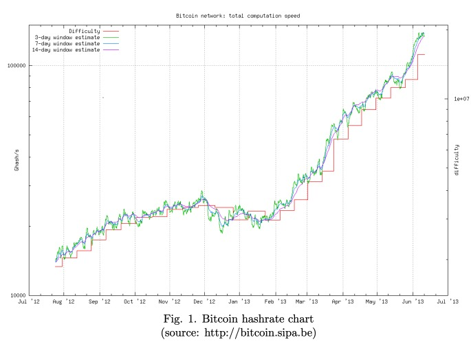
2.4 硬编码常量
比特币有很多硬编码的限制，这里有些是原始设计的自然元素（例如冻结频率，最大货币供应量，确认数量），而另一些似乎是人为约束。与其说是限制不如说是在必要时无法快速变化的能力导致的主要缺陷。不幸的是，很难预测何时需要更改常量，而替换常量可能导致可怕的后果。
硬编码限制的更改会导致灾难性后果的一个很好的例子是将块大小限制设置为250kb。这个限制足以容纳约10000个标准交易。在2013年初，几乎已达该限制的上限，然后商量同意增加限制。 该更改已在0.8版钱包中实施，并以24个区块的链拆分和成功的双花攻击结束。尽管该错误不是在比特币协议中，而是在数据库引擎中，但是如果没有人为引入的块大小限制，则可以通过简单的压力测试很容易地发现它。
常数也充当中心化的点的一种形式。尽管比特币具有点对点的性质，但绝大多数节点还是使用由一小组人开发的官方参考客户端。该小组决定实施协议更改，并且大多数人接受这些更改，无论其“正确性”如何。 一些决定引起了热烈的讨论，甚至呼吁抵制，这表明社区和开发人员可能在某些重要问题上存在分歧。因此，将协议与用户可配置和自调整变量作为避免这些问题的一种可能方式似乎是合乎逻辑的。
2.5 臃肿的脚本
比特币中的脚本系统是一个繁重而复杂的功能。它可能允许人们创建复杂的交易，但是由于安全性考虑，它的某些功能被禁用，有些甚至从未使用过。比特币中最受欢迎的交易的脚本（包括发送者和接收者的部分）如下所示：
1 | <sig> <pubKey> OP DUP OP HASH160 <pubKeyHash> OP EQUALVERIFY OP CHECKSIG. |
该脚本长164个字节，而其唯一目的是检查接收者是否拥有验证其签名所需的密钥。
CryptoNote 技术
既然我们已经了解了比特币技术的局限性，我们将集中介绍CryptoNote的功能。
4 无法追踪的交易
在本节中，我们提出一种同时满足不可追溯性和无关联性条件的完全匿名交易的方案。我们解决方案的一个重要特征是它的自治性：不需要发送者与其他用户或受信任的第三方合作进行交易；因此，每个参与者都可以独立进行交易。
4.1 综述
我们的方案依赖于称为“组签名（group signature）”的加密原语。该方案首先由D. Chaum 和 E. van Heyst提出，它允许用户代表该组在其消息上签名。在签名消息后，用户（出于验证目的）提供的不是他自己的单个公共密钥，而是其组中所有用户的密钥。 验证者确信真正的签名者是该组的成员，但不能专门识别真正的签名者。
原始协议需要一个受信任的第三方（称为组管理器），而他是唯一可以跟踪签名者的人。Rivest等人介绍的下一个版本称为环签名， 是一个没有组管理器和匿名吊销的自治方案。此方案的各种修改随后出现：可链接的环签名允许确定两个签名是否由同一组成员生成，可追踪的的环签名通过提供追踪两个具有相同元信息的消息的签名者的可能性来限制过多的匿名性。
类似的密码结构也称为临时组签名（ad-hoc group signature），它强调任意组的形成，而组/环签名方案则暗含固定的一组成员。在大多数情况下，我们的解决方案基于E. Fujisakiand K. Suzuki的作品“ 可追踪环签名（Traceable ring signature）”。为了区分原始算法和我们修改后的算法，我们将后者称为一次性环签名，强调用户只能在其私钥下产生一个有效签名。我们弱化了可追溯性属性，并仅保留了可链接性以提供一次性功能：公钥可能会出现在许多外来验证集中，而私钥可用于生成唯一的匿名签名。 万一出现双花，这两个签名将链接在一起，但出于我们的目的，没有必要透露签名者。
4.2 定义
4.2.1 椭圆曲线参数
作为我们的基础签名算法，我们选择由D.J. Bernstein等人开发实现的快速签名方案EdDSA。像比特币的ECDSA一样，它基于椭圆形的曲线对数问题，因此我们的方案将来也可以应用于比特币。通用参数有这些：
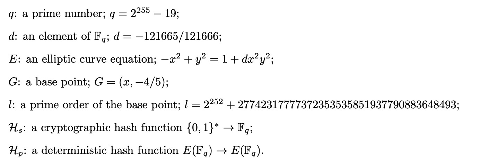
4.2.2 术语
增强的隐私需要新的术语，不应与比特币实体混淆。
- private ec-key 标准的椭圆曲线私钥：该私钥是一个满足a∈[1,l−1]的数字；
- public ec-key 标准的椭圆曲线公钥：一个点A=aG；
- one-time keypair 是一对椭圆曲线私钥和公钥；
- private user key 是一对(a,b)不同的椭圆曲线私钥；
- tracking key 是一对椭圆曲线私钥和公钥(a,B)（当B=bG且a != b）；
- public user key 是从(a,b)导出的一对椭圆曲线公钥(A,B)；
- standard address 是一串将用户公钥转换为带纠错功能的人类可读的字符串
- truncated address 是将公共用户密钥的第二部分（point B）转换为带纠错功能的人类可读的字符串
交易结构与比特币中的结构相似：每个用户可以选择多个独立的入账付款方式（交易输出），使用相应的私钥进行签名并将其发送到不同的地址。
与用户拥有唯一的私钥和公钥的比特币模型相反，在提议的模型中，发件人根据收件人的地址和一些随机数据生成一次性公钥。
在这种场景下，同一接收方的一个入账交易将发送到一次性公钥（而不是直接发送到唯一地址），只有接收方才能恢复相应的私有部分以赎回他的资金（使用他的唯一私钥）。而接收方可以花费这些资金并且让自己的所有权和实际花费保持匿名性，协议的详细信息将在下一部分中说明。
4.3 无法关联的支付
通常比特币地址一经发布，便成为入账的明确标识，将它们链接在一起并与收件人的假名联系在一起。如果某人想接收“未平分”交易，则应通过私人渠道将其地址传达给发件人。如果他想接收无法证明属于同一所有者的其他交易，则应生成所有不同的地址，并且永远不要用自己的假名发布。
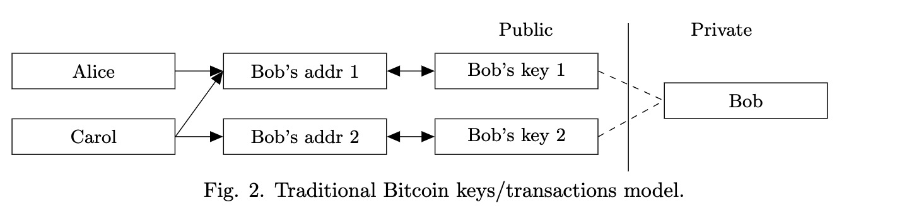
我们提出了一种解决方案，允许用户发布单个地址并接收绝对无关联性的付款方式。每个CryptoNote的输出（默认情况下）是一个由接收方的地址和发送方的随机数导出的一个公钥。相对于比特币的主要优势在于，默认情况下，每个公钥都是唯一的（除非发件人对同一收件人的每笔交易都使用相同的数据）。 因此，不会存在“地址重用”这样的问题，而且监听者也无法确定是否有交易发送到特定地址或将两个地址关联在一起。
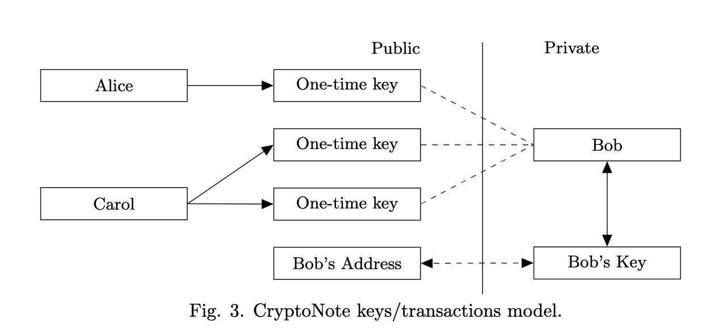
首先，发送方把自己的数据和接收方地址的一部分通过Diffie-Hellman秘钥交换协议算法获得一个共享秘钥。然后，他通过共享秘钥和接收方地址的另一部分计算出一次性秘钥。这两个步骤需要接收者使用两个不同的椭圆曲线密钥，因此标准的CryptoNote地址几乎是比特币钱包地址的两倍。 接收者还执行Diffie-Hellman交换协议算法以恢复相应的密钥。
一个标准的交易顺序如下：
- Alice想向已发布标准地址的Bob发送付款。 她解开地址包，得到鲍勃的公钥（A，B）。
- Alice生成一个随机数r∈[1,l−1]并且计算一次性公钥P=Hs(rA)G+B。
- Alice使用P作为输出的Key同时也将R=rG(作为Diffie-Hellman秘钥交互)打包进交易。注意，她可以使用唯一的公钥创建其他输出：不同的接收者秘钥(Ai,Bi)表示不同的Pi，就算他们有相同的r。
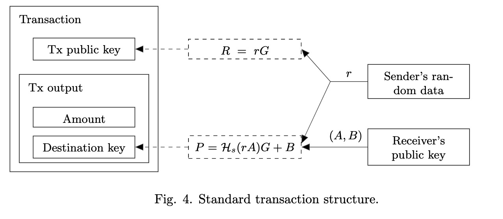 - Alice发送交易。
- Bob用他的私钥(a,b)检查每一个经过的交易，然后计算P’=Hs(aR)G+B，如果Bob作为接收者在Alice的交易之中，那么aR=arG=rA且P’=P。
- Bob可以恢复相应的一次性私钥：x=Hs(aR) +b, 只要P=xG
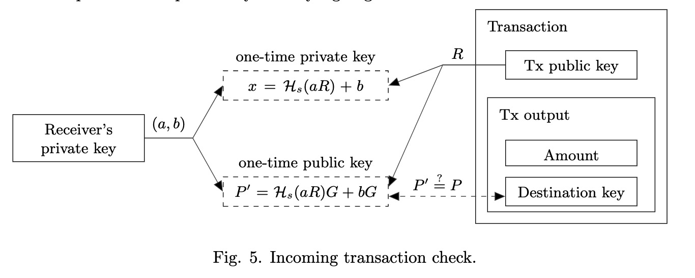
最终，Bob获得了与一次性公钥相关联的收款，该一次性公钥对于观众是不可链接的。 一些附加说明：
- 当Bob“确认”他的交易时（请参阅步骤5），他实际上仅使用其私人信息的一半：（a，B）。 这也称为跟踪密钥，可以传递给第三方（Carol）。 Bob可以委托她处理新交易。 Bob无需明确信任Carol，因为如果没有Bob的完整私钥（a，b），她就无法恢复一次性密钥。 当Bob缺乏带宽或计算能力（智能手机，硬件钱包等）时，此方法很有用。
- 如果Alice想证明她已向Bob的地址发送了交易，则可以公开r或使用任何零知识协议证明她知道r（例如，通过与r签署交易）。
- 如果Bob想要一个所有交易都关联的审计可兼容的地址，那么可以发布其跟踪密钥或使用截断的地址。 该地址仅代表一个公共ec-key B，协议所要求的其余部分是从该地址导出的：a = Hs(B)和A = Hs(B)G。 在这两种情况下，每个人都可以“识别” Bob的所有传入交易，但是，当然，没有密钥b，任何人都无法花费其中的资金。
4.4 一次性环签名
基于一次性环形签名的协议允许用户实现绝对的无关联性。不幸的是，普通类型的加密签名方案允许跟踪到交易各自的发送者和接收者。 针对这种缺陷我们的解决方案是使用与现有电子现金系统不同的签名类型。
我们将首先提供对算法的一般描述，而不明确提及电子现金。
一次性环签名包含四个算法:(GEN,SIG,VER,LNK):
- GEN 输入公共参数并输出ec对（P，x）和公钥 I。
- SIG 输入消息 m，符合{Pi}i != s的一组公钥S‘，密钥对(Ps,xs)，输出一个签名σ 和 一组公钥S=S′∪{Ps}。
- VER 输入一个消息 m，一组公钥S，签名σ，输出”true”或者”false“。
- LNK 输入一组公钥 I={Ii}, 签名σ，输出 “linked” or “indep”。
该协议背后的想法很简单：用户产生一个可以通过一组公钥而不是唯一的公钥来检查的签名。 签名者的身份与公共密钥在集合中的其他用户没有区别，直到所有者使用相同的密钥对产生第二个签名。
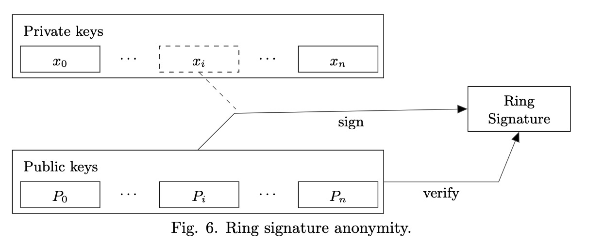
- GEN 签名方生成一个随机密钥 x∈[1,l−1]，然后计算相应的公钥 P= xG。另外再计算另外一个叫做”密钥镜像“的公钥 I = xHpP。
- SIG 签名者生成具有非交互式零知识证明的一次性环签名。他从其他用户的公共密钥Pi，他自己的密钥对（x，P）和密钥镜像 I 中选择n个随机子集S’。令0≤s≤n是S中签名者的秘密索引（因此他的公共密钥为 Ps）。
他从（1 … l）中选择一个随机的{qi | i = 0 … n}和{wi | i = 0 … n，i != s}并应用以下转换:
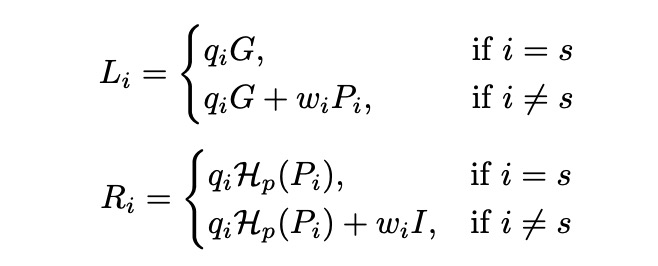
下一步是应对非交互性挑战：
c=Hs(m,L1,…,Ln,R1,…,Rn)
最后签名计算结果：
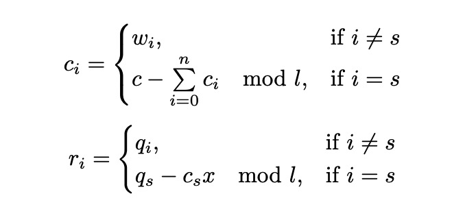
最终签名的结果是σ= (I,c1,…,cn,r1,…,rn)
VER 验证者通过下面的反向转换来检查签名：
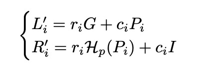
最终，验证者检查等式是否成立：
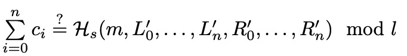
如果这个等式成立，那么验证者运行LNK算法，否则验证者否定这个签名。LNK 验证者序检查是否在过去的签名中使用了I（这些值存储在集合II中）。 多次使用意味着两个签名是在同一密钥下产生的。
协议的含义：通过运用 L 变换，签名者证明他知道至少有一个Pi=xG。为了使该证明不可重复，我们引入了密钥镜像 I=xHp(P)。签名者使用相同的系数(ri,ci)来证明几乎相同的陈述：他知道至少有一个Hp(Pi)=I.x-1。
如果映射x→I是注入：
- 没有人可以从密钥镜像和签名者的标识中恢复公钥；
- 签名者不能通过使用不同的I和相同的x来创造出两个签名。
一份完整的安全分析在索引A
4.5 标准的 CryptoNote 交易
通过结合两种方法（不可链接的公钥和不可追踪的环签名），Bob与原始比特币方案相比实现了新的隐私级别。它要求他仅存储一个私钥（a，b）并发布（A，B）以开始接收和发送匿名交易。
在验证每笔交易时，鲍勃仅需对每个输出执行两次椭圆曲线乘法和一次加法去检查某笔交易是否属于他。对于他的每个输出，Bob恢复一次密钥对（pi,Pi）并将其存储在他的钱包中。仅当输入出现在单个事务中时，才能间接证明任何输入都具有相同的所有者。 实际上，由于一次环签名，这种关系很难建立。
有了环签名，Bob可以有效地隐藏别人的所有输入； 所有可能的支出者都是等价的，即使以前的所有者（Alice）所掌握的信息也没有比观察者的更多。
在签名交易时，Bob指定了n个具有相同数量的对外输出来作为他的输出，在没有其他用户参与的情况下混合了所有这些输出。Bob本人（以及其他任何人）都不知道这些付款是否已花费：一个输出可以作为匿名因子放在成千上万的签名中，而不是作为隐藏目标。当检查发现与使用的密钥镜像集不同时，会在LNK原语中检测是否有双花。
Bob可以自己选择匿名度：n = 1表示他花费输出的概率为50％，n = 99时表示他花费输出的概率为1％。生成的签名的大小随着O（n + 1）线性增加，因此匿名性的提高使Bob付出了额外的交易费用。 他还可以设置n = 0并使他的环签名仅包含一个元素，但这将立刻暴露他是一个消费者。
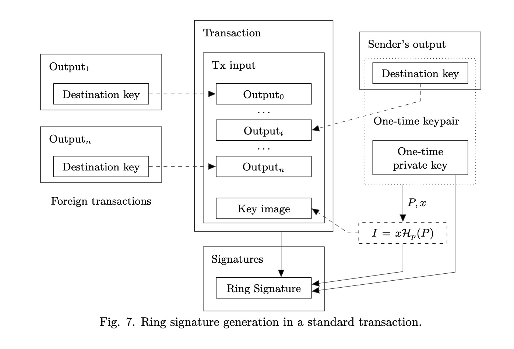
5 工作量证明(Proof-of-work)的公平性
在这节中，我们提出并落地实现了新的工作量证明算法。 我们的主要目标是缩小CPU（多数）和GPU / FPGA / ASIC（少数）矿工之间的差距。 一些用户可以比其他用户具有一定优势是适当的，但是他们的投资应至少随计算能力线性增长。 更一般而言，生产专用设备的利润必须尽可能少。
5.1 相关研究
原始的比特币工作量证明协议使用密集计算SHA-256函数的CPU算力。它主要由基本逻辑运算符组成，并且仅依赖于处理器的计算速度，因此非常适合于多核/流水线式架构实现的CPU。
但是，现代计算机并不仅限于每秒的操作数，还受内存大小的限制。 尽管某些处理器可能比其他处理器更快，但是内存大小在不同机器之间变化的可能性较小。
利用内存来计算算力函数的方案由Abadi等人提出，并被定义为”其计算时间由访问内存所花费的时间决定的函数”。主要思想是构造一种算法，在内存中分配一个较大的数据块（“便签本”），该数据块可以相对缓慢地访问（例如，RAM），并在其中“访问不可预测的位置序列”。块应该要足够大以便保存数据比对每次访问重新计算数据更为有利。该算法还应防止内部并行性，因此，N个并发线程应一次需要N倍的内存。
Dwork等人对这种方法进行了调查和形式化，导致他们提出了定价函数的另一个变量：“ Mbound”。F. Coelho做的另一项工作是他提出了最有效的解决方案：“北海道”。
据我们所知，基于大数组伪随机搜索思想的最后一项工作是C. Percival [32]所称的“ scrypt”算法。与以前的功能不同，它专注于密钥派生，而不是工作量证明系统。 尽管如此，scrypt仍可以达到我们的目的：它在部分哈希转换问题（例如比特币中的SHA-256）中可以很好地用作定价功能。
到目前为止，scrypt已在莱特币和其他一些比特币分叉中应用。 但是，它的实现并不是真正受内存限制：“内存访问时间/总时间”之比不够大，因为每个实例仅使用128 KB。 这使GPU矿工的效率提高了大约10倍，并继续留下了创建相对便宜但高效的采矿设备的可能性。
此外，由于暂存器中的每个块仅源自前一个，因此scrypt结构本身允许在内存大小和CPU速度之间进行线性权衡。例如，您可以存储第二个块并以惰性方式重新计算其他块，即仅在必要时才重新计算。假定伪随机索引是均匀分布的，因此附加块重新计算的期望值为N/2，其中N为迭代次数。总体计算时间增加了不到一半，因为还存在与时间无关的（恒定时间）操作，例如在每次迭代中准备暂存器和哈希。保存2/3的内存需要花费N/3 + 2N/3 = N额外的重新计算。9/10的内存则需要N/10+…+9/N = 4.5N。这很容易知道存储1/8的块增加的时间要少于一个因子(s-1)/2。反过来这意味着一台CPU速度比现代芯片快200倍的计算机只能存储320字节的暂存器。
5.2 提出的算法
我们为工作量证明定价功能提出了一种新的内存绑定算法。 它依赖于对慢速内存的随机访问，并强调延迟依赖性。 与scrypt相反，每个新块（长度为64个字节）都取决于所有先前的块。 最终假设的“内存保护程序”应以指数方式增加其计算速度。
由于以下原因，我们的算法每个实例需要大约2 Mb的内存:
- 它适合现代处理器的L3高速缓存（每核），该高速缓存将在几年内成为主流;
- 对于现代集成电路芯片(ASIC)管道，兆字节的内部存储器几乎是无法接受的大小;
- GPU可以运行数百个并发实例，但是它们在其他方面受到限制：GDDR5内存比CPU L3缓存慢，并且其带宽显著，而不是随机访问速度。
- 暂存器的显着扩展将需要增加迭代次数，这反过来又意味着总体时间增加。不信任的p2p网络中的“大量”呼叫可能会导致严重的漏洞，因为节点必须检查每个新块的工作量证明，如果节点在每次哈希评估上花费大量时间，则可以通过大量带有任意工作数据（随机值）的假对象轻松地对其进行DDoS处理。
6 其他优势
6.1 平稳的发行
CryptoNote数字硬币总量的上限是：MSupply = 264-1原子单位。 这是仅基于实施限制的自然限制，而不是基于直觉的限制比如说“ Ncoins应该足以供任何人使用”。
为了确保发行过程的平稳性，我们使用以下公式进行块奖励: BaseReward = (MSupply - A) >> 18,其中A是先前生成的硬币总量。
6.2 可调参数
6.2.1 困难
CryptoNote包含一种可改变每个区块难度的定位算法。当网络哈希率急剧增长或缩小时，这可以减少系统的响应时间，并保持恒定的阻塞率
。原始的比特币方法计算最后2016个块之间的实际时间跨度与目标时间跨度的关系，并将其用作当前难度的乘数。显然，这不适用于快速重新计算（由于惯性较大）并导致振荡。
我们算法背后的总体思想是对节点完成的所有工作求和，然后将它们除以花费的时间。每个块中相应的难度值就是工作量。工作量度是每个块中相应的难度值。 但是由于时间戳的不正确和不可信，我们无法确定块之间的确切时间间隔。 用户可以将其时间戳转换为将来的时间戳，下一个时间间隔可能很小，甚至是负数。大概不会发生此类事件，因此我们可以对时间戳进行排序并截断异常值（即20％）。 其余值的范围是用于80％相应块的时间。
6.2.2 大小限制
用户为存储区块链付费，并有权对其大小进行投票。每个矿工都在权衡成本和费用收益之间权衡取舍，并为创建区块设置了自己的“软限制”。
为防止区块链被虚假交易淹没，最大区块大小的核心规则也是必要的，但是这个值不应该硬编码。
让MN为最后N个块大小的中值，然后接收块大小的”硬限制”为2.MN。它避免了区块链膨胀，但在必要时仍允许限制随着时间的推移缓慢增长。
交易规模无需明确限制。 它受一个块的大小限制；如果有人想创建一个具有数百个输入/输出的大型交易（或在环签名中具有很高的匿名性），他可以通过支付足够的费用来做到这一点。
6.2.3 过大尺寸的惩罚
矿工仍然可以将自己的零费用交易充填到最大2·Mb的区块中。 即使只有大多数矿工可以改变中间值，但仍有可能膨胀区块链并在节点上产生额外的负载。 为了阻止恶意参与者创建大块，我们引入了惩罚函数:
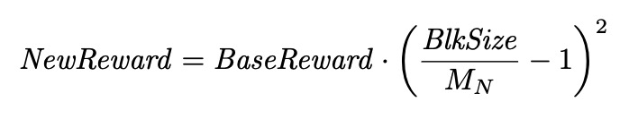
仅当BlkSize大于最小空闲块大小（应接近max(10kb, MN·110％））时，才应用此规则。当总费用超过罚款标准时，允许矿工创建“常规规模”的块，甚至超过利润。 但是费用不大可能像惩罚值那样二次方增长，因此将会有一个平衡。
6.3 交易脚本
CryptoNote有一个非常简约的脚本子系统。 发送方指定表达式Φ= f(x1，x2，…，xn)，其中n是目标公钥的数量{Pi}in=1。仅支持五个二进制运算符：min，max，sum，mul和cmp。当接收者花了这笔付款时，他会产生0≤k≤n个签名，并将它们传递给交易输入。 验证过程仅用xi = 1来评估Φ，以检查公钥Pi的有效签名，并且xi = 0。验证者接受证明当且仅当Φ> 0。
尽管这种方法很简单，但它涵盖了所有可能的情况:
- 多个/阈值签名. 对于比特币样式”M-out-of-N”的多重签名(即接收者应至少提供0≤M≤N个有效签名)Φ= x1 + x2 + … +xN≥M(为清楚起见，我们使用通用代数符号)。加权阈值签名（某些键可能比其他键更重要）可以表示为Φ= w1·x1 + w2·x2 + … + wN·xN≥wM。主密钥对应于Φ= max（M·x，x1 + x2 + … + xN）≥M的场景。 很容易证明，这些运算符可以表达任何复杂的情况，即它们构成了基础。
- 密码保护 拥有秘钥密码
s相当于知道了私钥，可以准确地从密码导出私钥：k = KDF(s)。因此，接收者可以通过在密钥k下提供另一个签名来证明自己知道密码。发送者只需将相应的公钥添加到自己的输出中即可。值得注意的是此方法比比特币中使用的“交易难题”安全得多，在比特币中，密码在输入中明确传递。 - 退化案例 Φ= 1意味着任何人都可以花钱； Φ= 0表示输出永远无法使用。
如果结合了公钥的输出脚本对于发送者来说太大，那么他可以使用特殊的输出类型，这表明接收者会将这些数据放入他的输入中，而发送者只提供它的一个哈希值。 这种方法类似于比特币的“pay-to-hash”功能，但是与添加新的脚本命令不同，我们在数据结构级别处理这种情况。
结论
诺贝尔奖获得者弗里德里希·哈耶克（Friedrich Hayek）的著名著作证明，独立并发货币的存在具有巨大的积极作用。每个货币发行人（或本例中的开发商）都在尝试通过改进其产品来吸引用户。货币就像一种商品：它具有独特的优点和缺点，而最方便和可信赖的货币需求最大。假设我们有一种比比特币更出色的货币：这意味着比特币将发展得更快，变得更好。 作为开源项目最大的支持将来自对其感兴趣的自己的用户。
我们不认为CryptoNote可以完全替代比特币。 相反，拥有两种（或更多）强大方便的货币比仅拥有一种更好。 并行运行两个或更多不同的项目是电子现金经济学的自然流程。
A 安全性
我们将为我们的一次性环签名方案提供证明。 在某些时候它与[24]中的证明部分相吻合，但是我们决定用参考文献重写它们，而不是强迫读者匆匆忙忙地从一篇论文转向另一篇论文。
这些是要建立的属性：
- 关联性(Linkability). 给定集合S的所有秘钥{xi} in = 1，就不可能产生n + 1个有效签名σ1，σ2，…，σn+ 1，以使它们全部通过
LNK阶段（即使用n + 1个不同的密钥镜像Ii)。 该属性意味着在CryptoNote上下文中的双重支出保护。 - 排他性(Exculpability). 在给定集合S的情况下，最多有n-1个对应的私钥xi（不包括i = j）且密钥xj的图像Ij不可能生成带有Ij的有效签名σ。该属性意味着在CryptoNote上下文中的防盗保护。
- 防伪性(Unforgeability). 仅给出公共密钥集S，就不可能产生有效的签名σ。
- 匿名性(Anonymity). 给定一个签名σ和相应的集合S，就不可能确定概率为
p> 1/n的签名者的秘密索引j。
关联性(Linkability)
原理1. 我们的一次性环签名方案在随机预言模型(oracle model)下是有关联性的。
证明. 假定对手通过密钥镜像 Ii != Ij，且i，j∈[1 … n]，可以产生 n + 1个有效签名 σi。因为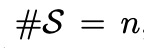,那么对于每个i至少存在一个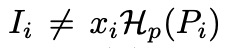。考虑到相应的签名σ=（I，c1，…，cn，r1，…，rn）。VER（σ）=“ true”，这意味着:
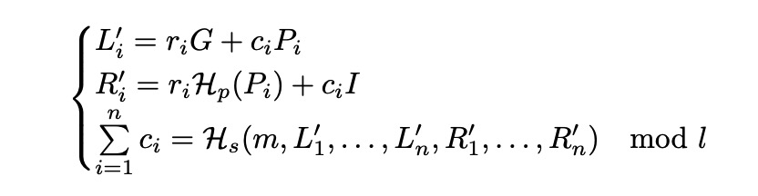
前两个等式意味着
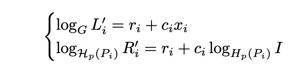
其中logAB非正式地表示B与底数A的离散对数
如[24]中所示，我们注意到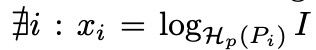意味着所有ci都是唯一确定的。第三等式迫使对手寻找Hs的原像以在攻击中成功，此事件的概率被认为是可以忽略不计的。
排他性(Exculpability)
原理2. 在随机预言机模型(oracle model)中，在离散对数假设下，我们的一次性环签名方案是可排他的。
证明. 假设对手在给定{xi | i = 1，…，j−1的情况下，如果I = xjHP(Pj)，则可以产生有效的签名σ=（I，c1，…，cn，r1，…，rn） ，j + 1，…，n}。 然后，我们可以构造一个算法A来解决E(Fq)中的离散对数问题。
假设inst = (G, P) ∈ E(Fq) 是DLP的给定实例，目标是得到s，使得P = sG。使用标准技术，模拟随机和签名预言，当 Pj = P 时在集合S：σ=（I，c1，…，cn，r1，..，rn）和σ’=（I，c’1，…，c’n，r’1，…，r’n）中生成两个有效签名。
由于两个签名中 I= xjHp(Pj)，我们计算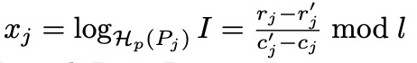
A 输出 xj，因为 Lj = rjG + cjPj = r’jG + c’jPj 且 Pj = P。
防伪性(Unforgeability)
在[24]中已经表明，不可伪造性只是链接性和排他性的结果。
原理3. 如果一次性环签名方案是可链接和可排他的，则它是不可伪造的。
证明. 假设对手可以伪造给定集合S：σ0=（I0，…）的签名。 考虑同一消息m和集合S：σ1，σ2，…，σn的所有有效签名（由诚实签名者生成）。 有两种可能的情况:
- 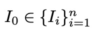 说明与排他性矛盾。
- 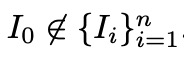 说明与关联性矛盾。
匿名性(Anonymity)
原理4. 在随机预言机模型中，在决策Diffie-Hellman假设下，我们的一次性环签名方案是匿名的。
证明. 假设对手可以确定概率为p = 1/n + e 的签署者的秘密索引j。 然后，我们可以构造算法A，它以1/2+e/2的概率解决 E(Fq) 中的起决定性作用的Diffie-Hellman问题。
令inst =（G1，G2，Q1，Q2）∈E（Fq）是DDH的实例，目标是确定logG1Q1 = logG2Q2等式是否成立。A为对手提供有效签名σ0=（I，…），其中Pj = xjG1 = Q1和I = Q2并模拟预言机Hp，查询Hp(Pj)并返回G2。
对手返回k作为他对索引 i：I = xiHP（Pi）的猜测。 如果k = j，则A返回1（“是”），否则返回随机数r∈{1,0}。 正确选择的可能性的计算方法如下：
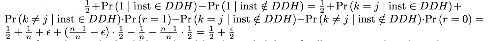
实际上，应通过以Hs为单位的碰撞概率来减少结果，但该值可以忽略不计。
哈希函数Hp注意事项
我们将Hp定义为确定性哈希函数E(Fq)→E(Fq)。 没有证据要求Hp是理想的加密哈希函数。 它的主要目的是以某种确定的方式为秘钥镜像 I = xHp(xG) 获得伪随机基数。
使用固定基数（I = xG2），可能出现以下情况:
- Alice向Bob发送两个标准交易，生成一次性tx密钥：P2 = Hs（r1A）G + B 和 P1 = Hs（r2A）G + B。
- Bob恢复相应的一次性私有交易秘钥 x1和x2然后使用有效的签名和秘钥镜像 I1 = x1G2 和 I2 = x2G2来花费输出。
- 现在Alice可以关联这些签名，检查等式是否相等 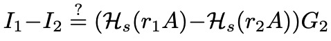
问题在于，Alice知道公钥P1和P2之间的线性相关性，并且在固定基数G2的情况下，她也获得了密钥图像I1和I2之间的相同相关性。 用不保持线性的Hp（xG2）替换G2可以修复该缺陷。
为了构造确定性的Hp，我们使用[37]中介绍的算法。
引用
[2] https://en.bitcoin.it/wiki/Category:MixingServices.
[3] http://blog.ezyang.com/2012/07/secure-multiparty-bitcoin-anonymization.
[4] https://bitcointalk.org/index.php?topic=279249.0.
[5] http://msrvideo.vo.msecnd.net/rmcvideos/192058/dl/192058.pdf.
[6] https://github.com/bitcoin/bips/blob/master/bip-0034.mediawiki#Specification.
[7] https://github.com/bitcoin/bips/blob/master/bip-0016.mediawiki#BackwardsCompatibility.
[8] https://en.bitcoin.it/wiki/Mininghardwarecomparison.
[9] https://github.com/bitcoin/bips/blob/master/bip-0050.mediawiki.
[10] http://luke.dashjr.org/programs/bitcoin/files/charts/branches.html.
[11] https://bitcointalk.org/index.php?topic=196259.0.
[12] https://en.bitcoin.it/wiki/Contracts.
[13] https://en.bitcoin.it/wiki/Script.
[14] http://litecoin.org.
[15] Mart ́ın Abadi, Michael Burrows, and Ted Wobber. Moderately hard, memory-bound func-tions. InNDSS, 2003.
[16] Ben Adida, Susan Hohenberger, and Ronald L. Rivest. Ad-hoc-group signatures from hi-jacked keypairs. Inin DIMACS Workshop on Theft in E-Commerce, 2005.
[17] Man Ho Au, Sherman S. M. Chow, Willy Susilo, and Patrick P. Tsang. Short linkable ringsignatures revisited. InEuroPKI, pages 101–115, 2006.
[18] Daniel J. Bernstein, Niels Duif, Tanja Lange, Peter Schwabe, and Bo-Yin Yang. High-speedhigh-security signatures.J. Cryptographic Engineering, 2(2):77–89, 2012.
[19] David Chaum and Eug`ene van Heyst. Group signatures. InEUROCRYPT, pages 257–265,1991.
[20] Fabien Coelho. Exponential memory-bound functions for proof of work protocols.IACRCryptology ePrint Archive, 2005:356, 2005.
[21] Ronald Cramer, Ivan Damg ̊ard, and Berry Schoenmakers. Proofs of partial knowledge andsimplified design of witness hiding protocols. InCRYPTO, pages 174–187, 1994.
[22] Cynthia Dwork, Andrew Goldberg, and Moni Naor. On memory-bound functions for fightingspam. InCRYPTO, pages 426–444, 2003.
[23] Eiichiro Fujisaki. Sub-linear size traceable ring signatures without random oracles. InCT-RSA, pages 393–415, 2011.
[24] Eiichiro Fujisaki and Koutarou Suzuki. Traceable ring signature. InPublic Key Cryptogra-phy, pages 181–200, 2007.
[25] Jezz Garzik. Peer review of “quantitative analysis of the full bitcoin transaction graph”.https://gist.github.com/3901921, 2012.
[26] Joseph K. Liu, Victor K. Wei, and Duncan S. Wong. Linkable spontaneous anonymousgroup signature for ad hoc groups (extended abstract). InACISP, pages 325–335, 2004.
[27] Joseph K. Liu and Duncan S. Wong. Linkable ring signatures: Security models and newschemes. InICCSA (2), pages 614–623, 2005.
[28] Ian Miers, Christina Garman, Matthew Green, and Aviel D. Rubin. Zerocoin: Anonymousdistributed e-cash from bitcoin. InIEEE Symposium on Security and Privacy, pages 397–411, 2013.
[29] Micha Ober, Stefan Katzenbeisser, and Kay Hamacher. Structure and anonymity of thebitcoin transaction graph.Future internet, 5(2):237–250, 2013.
[30] Tatsuaki Okamoto and Kazuo Ohta. Universal electronic cash. InCRYPTO, pages 324–337,1991.
[31] Marc Santamaria Ortega. The bitcoin transaction graph — anonymity. Master’s thesis,Universitat Oberta de Catalunya, June 2013.
[32] Colin Percival. Stronger key derivation via sequential memory-hard functions. Presented atBSDCan’09, May 2009.
[33] Fergal Reid and Martin Harrigan. An analysis of anonymity in the bitcoin system.CoRR,abs/1107.4524, 2011.
[34] Ronald L. Rivest, Adi Shamir, and Yael Tauman. How to leak a secret. InASIACRYPT,pages 552–565, 2001.
[35] Dorit Ron and Adi Shamir. Quantitative analysis of the full bitcoin transaction graph.IACR Cryptology ePrint Archive, 2012:584, 2012.
[36] Meni Rosenfeld. Analysis of hashrate-based double-spending. 2012.
[37] Maciej Ulas. Rational points on certain hyperelliptic curves over finite fields.Bulletin ofthe Polish Academy of Sciences. Mathematics, 55(2):97–104, 2007.
[38] Qianhong Wu, Willy Susilo, Yi Mu, and Fangguo Zhang. Ad hoc group signatures. InIWSEC, pages 120–135, 2006.